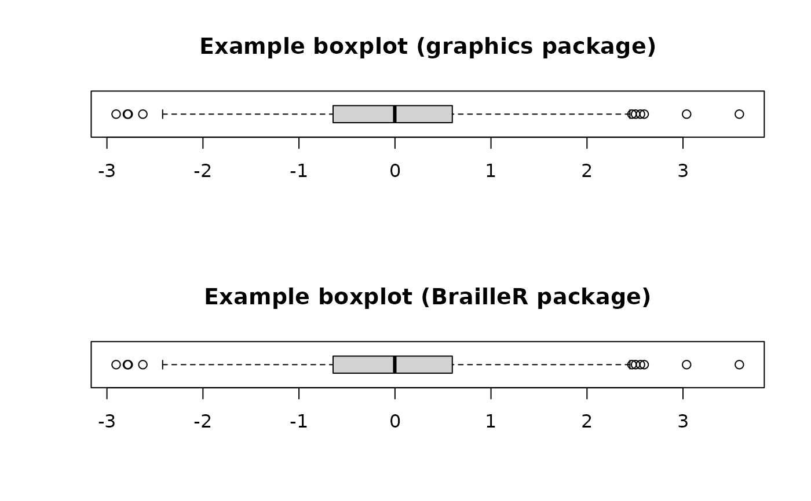

boxplot.RdThis function is a wrapper to the standard boxplot() function in the graphics package. It adds detail to the stored object so that a better text description can be formulated using the VI() method in the BrailleR package.
boxplot(x, ...)a numeric variable.
additional arguments passed on to the plotting function.
This function masks the function of the same name in the graphics package. The base R implementation does create an object, but does not give it a class attribute, the object does not store all graphical arguments that are passed to the boxplot() function. The functionality should be no different at all for anyone who is not using the VI() function to gain a more detailed text description of the boxplot. See the help page for the graphics::boxplot() function to get a more complete description of boxplot creation.
An object of class boxplot. This class is just a placeholder for the contents of the object used to create a boxplot which would otherwise not be stored in a usable format. The class is not intended for the user; it is a tool that enables the BrailleR package to deliver a readable text version of the plot.
The problem of not including class attributes for graphs was identified in: Godfrey, A.J.R. (2013) ‘Statistical Software from a Blind Person's Perspective: R is the Best, but we can make it better’, The R Journal 5(1), pp73-79.
I would love to see this function become redundant. This will happen if the extra functionality is included in the boxplot() function in the graphics package. This should be possible as the user experience will not be any different, no matter if the user is blind or sighted.
x=rnorm(1000)
op = par(mfcol=c(2,1))
# the stamdard boxplot function returns
MyBoxplot=graphics::boxplot(x, main="Example boxplot (graphics package)", horizontal=TRUE)
MyBoxplot
#> $stats
#> [,1]
#> [1,] -2.50007514
#> [2,] -0.63436397
#> [3,] 0.06872823
#> [4,] 0.72943842
#> [5,] 2.53187613
#>
#> $n
#> [1] 1000
#>
#> $conf
#> [,1]
#> [1,] 0.000587224
#> [2,] 0.136869235
#>
#> $out
#> [1] 3.039843 -3.541311 -2.728380 3.252971 -2.848562
#>
#> $group
#> [1] 1 1 1 1 1
#>
#> $names
#> [1] ""
#>
# while this version returns
MyBoxplot=boxplot(x, main="Example boxplot (BrailleR package)", horizontal=TRUE)

MyBoxplot
#> $stats
#> [,1]
#> [1,] -2.50007514
#> [2,] -0.63436397
#> [3,] 0.06872823
#> [4,] 0.72943842
#> [5,] 2.53187613
#>
#> $n
#> [1] 1000
#>
#> $conf
#> [,1]
#> [1,] 0.000587224
#> [2,] 0.136869235
#>
#> $out
#> [1] 3.039843 -3.541311 -2.728380 3.252971 -2.848562
#>
#> $group
#> [1] 1 1 1 1 1
#>
#> $names
#> [1] ""
#>
#> $main
#> [1] "Example boxplot (BrailleR package)"
#>
#> $horizontal
#> [1] TRUE
#>
#> $call
#> graphics::boxplot(x, main = "Example boxplot (BrailleR package)",
#> horizontal = TRUE)
#>
#> $par
#> $par$xaxp
#> [1] -3 3 6
#>
#> $par$yaxp
#> [1] 0.6 1.4 4.0
#>
#>
#> $xTicks
#> [1] -3 -2 -1 0 1 2 3
#>
#> $yTicks
#> [1] 0.6 0.8 1.0 1.2 1.4
#>
#> $ExtraArgs
#> $ExtraArgs$main
#> [1] ""
#>
#> $ExtraArgs$sub
#> [1] ""
#>
#> $ExtraArgs$xlab
#> [1] ""
#>
#> $ExtraArgs$ylab
#> [1] ""
#>
#>
#> $NBox
#> [1] 1
#>
#> $VarGroup
#> [1] "variable"
#>
#> $VarGroupUpp
#> [1] "This variable"
#>
#> $IsAre
#> [1] "is"
#>
#> $Boxplots
#> [1] "a boxplot"
#>
#> $VertHorz
#> [1] "horizontally"
#>
#> attr(,"class")
#> [1] "Augmented" "boxplot"
par(op)
# The VI() method then uses the extra information stored
VI(MyBoxplot)
#> This graph has a boxplot printed horizontally
#> with the title:
#> "" appears on the x-axis.
#> "" appears on the y-axis.
#> Tick marks for the x-axis are at: -3, -2, -1, 0, 1, 2, and 3
#> This variable has 1000 values.
#> An outlier is marked at: 3.039843 -3.541311 -2.72838 3.252971 -2.848562
#> The whiskers extend to -2.500075 and 2.531876 from the ends of the box,
#> which are at -0.634364 and 0.7294384
#> The median, 0.06872823 is 52 % from the left end of the box to the right end.
#> The right whisker is 0.97 times the length of the left whisker.
#>